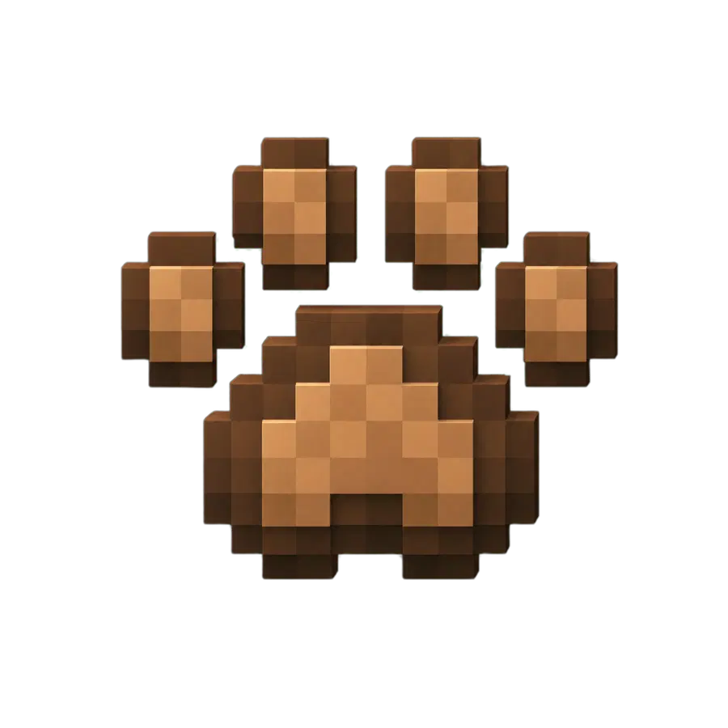
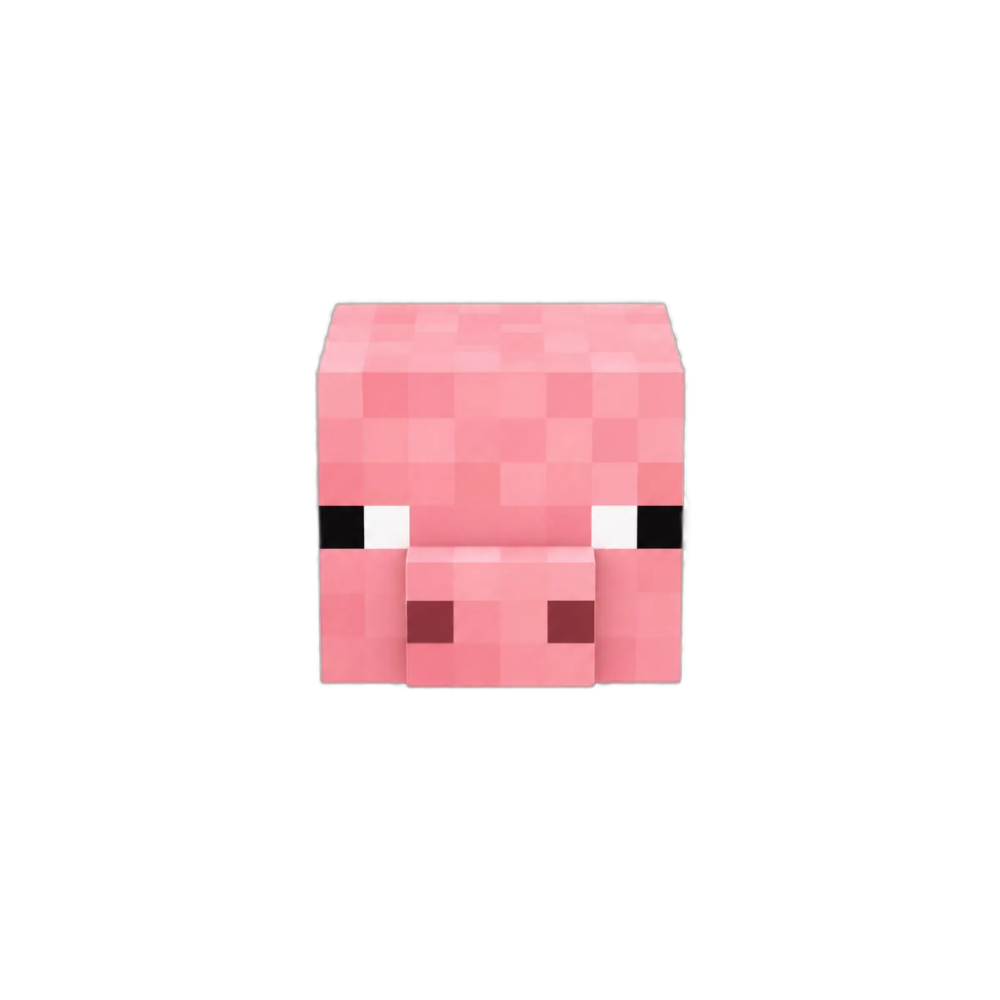
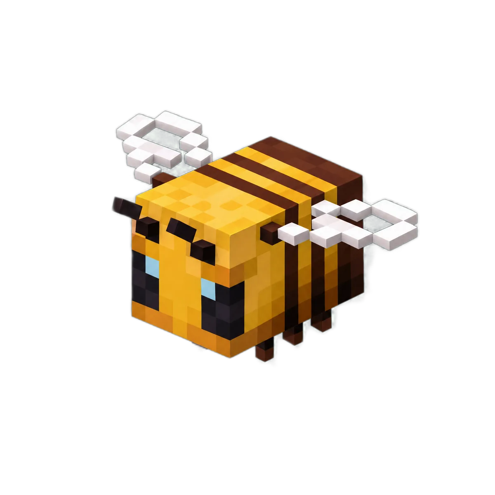
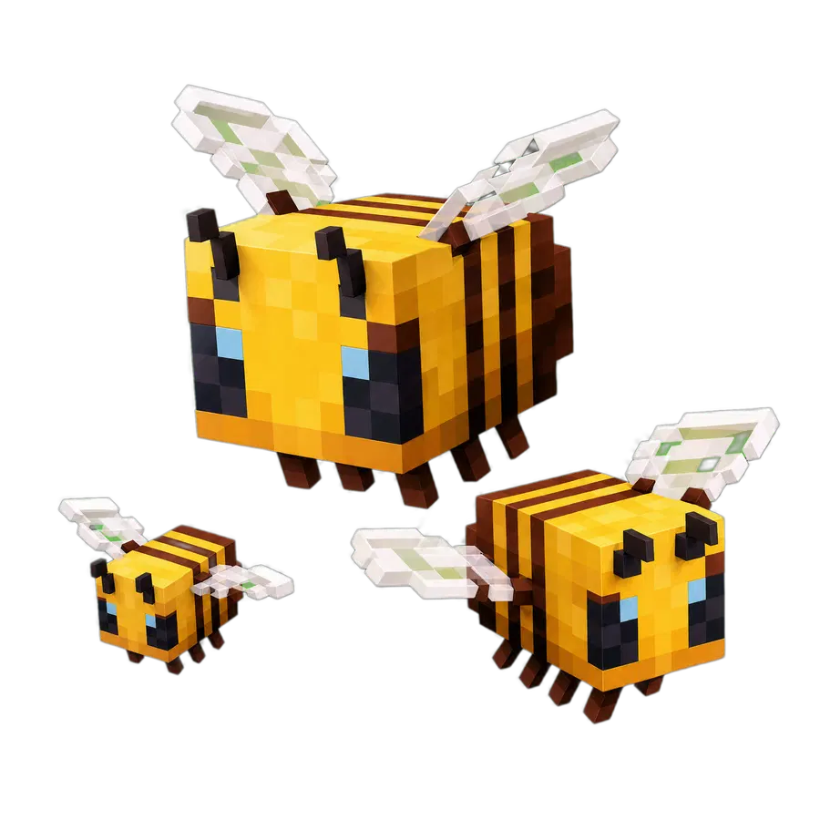
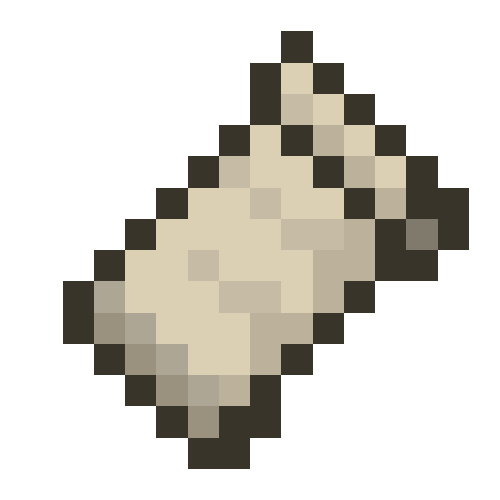
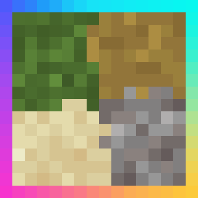

Every mod included in the modpack. Click any card to open the mod page on Modrinth and download it.
Real-time minimap with waypoints and mob detection.
Skips rendering of entities you can't see to gain FPS.

Rendering optimization mod that greatly improves performance.
Essential library required by most Fabric mods.
Improves inventory management with mouse shortcuts.

Fabric-based connected textures support.
Item and recipe viewer right in your inventory.
Extra performance and quality options for Sodium.
Improves loading times and reduces memory usage.
A redesigned video options screen for Sodium.
Renders the second skin layer in 3D.
Shows information about what you're looking at.
Shows the player's head next to chat messages.
Redesigned spiders with new animations and behavior.
Mobs rise from the ground with a smooth animation.
More Axolotl Variants & Mobs — more creature variety.
Reworked wolves with new looks and behavior.
Adds cute and detailed kiwis to the game.
Expands fishing with new fish and gear.
Animal babies with a cuter, more detailed look.
Adds several realistic wildlife animals.
More wild creatures to bring the world to life.
Animal-themed hats to customize your character.
Adds adorable porcupines to your garden.